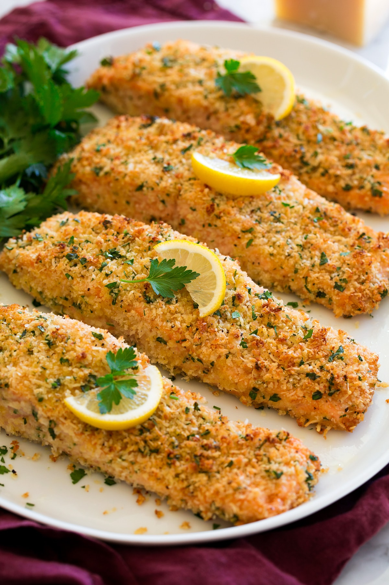

PARMESAN SALMON

What is Parmesan Salmon?
Of all the recipes that the author make, this is her
favorite for salmon. It's made with panko, or Japanese
bread crumbs, which are very light and crunchy, mixed
with Parmesan cheese. It's baked in the oven until panko
is nice and toasted.
Ingredients
- 4 (4 ounce) salmon fillets
- 1 ½ tablespoons fresh lemon juice
- salt and ground black pepper to taste
- ½ cup panko bread crumbs
- ¼ cup grated Parmesan cheese
- 1 tablespoon extra-virgin olive oil
- 1 teaspoon Italian seasoning
- ⅛ teaspoon garlic powder
Steps
- Preheat the oven to 425 degrees F (220 degrees C). Lightly grease a 9x13-inch baking pan.
- Place salmon fillets into the baking pan and sprinkle evenly with lemon juice. Season with salt and pepper.
- Combine panko, Parmesan cheese, olive oil, Italian seasoning, and garlic powder in a bowl. Sprinkle mixture evenly over the salmon.
- Bake in the preheated oven until topping is lightly browned and salmon flakes easily with a fork, 15 to 20 minutes.
Back to Main Menu